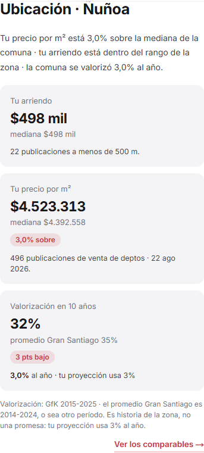
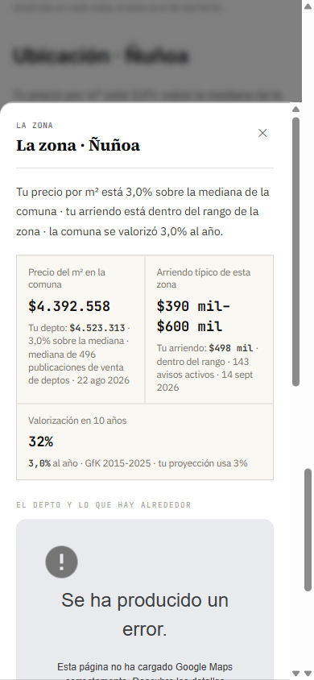

Mockup del 24-sep-2026. Dos filas reales en la hoja de teléfono (390) y el panel de escritorio (1100, modal de 720). Se abre siempre, con prosa o sin ella; dice la misma referencia de arriendo que la card, con el mismo eje, y lista los avisos con los que se calculó cuando el análisis los guardó.
`http://localhost:3007/analisis/00f9c0eb-bc91-419a-a4a2-c47871502a6b`, como invitado, modo claro.


Ancho de la planilla contra su contenedor y celdas que desbordan.
| AnalysisDrawer | La montura `activeDrawer === "zona"` en `SubjectCardGrid.tsx:465-486` y `DrawerZona` (`AnalysisDrawer.tsx:342-396`). Si `zona` era la última sección viva del drawer en LTR, el drawer entero queda sin llamador (ver la regla de retirar un llamador). |
| ZonaCeldasLtr | Las celdas viejas (`ZonaLtr.tsx:101-142`) con el rango comunal. El modal usa `ZonaCeldasLtrR2`, las de la card. |
| CSS duplicado | `.zona-cells` en `TokensShared.tsx:293-334` y `PortadaInforme.tsx:1453-1468`. |
| Telemetría | `informe_drawer_abierto {drawer:"zona"}` se emitía también cuando el drawer no se montaba. Pasa a emitirse al abrir el modal. |
| Filas viejas | Las 794 filas con referencia de radio que ya existen no tienen lista. Dos caminos: (a) decir que no la tienen (escena 2, como STR), o (b) mostrar los avisos de hoy con el mismo filtro, rotulados con su fecha. (b) vuelve a poner dos referencias en la misma pantalla —la guardada y la de hoy—, que es justo lo que este cambio saca. El mockup va con (a). |